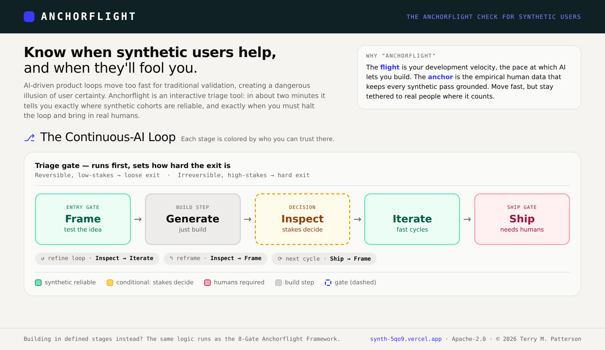
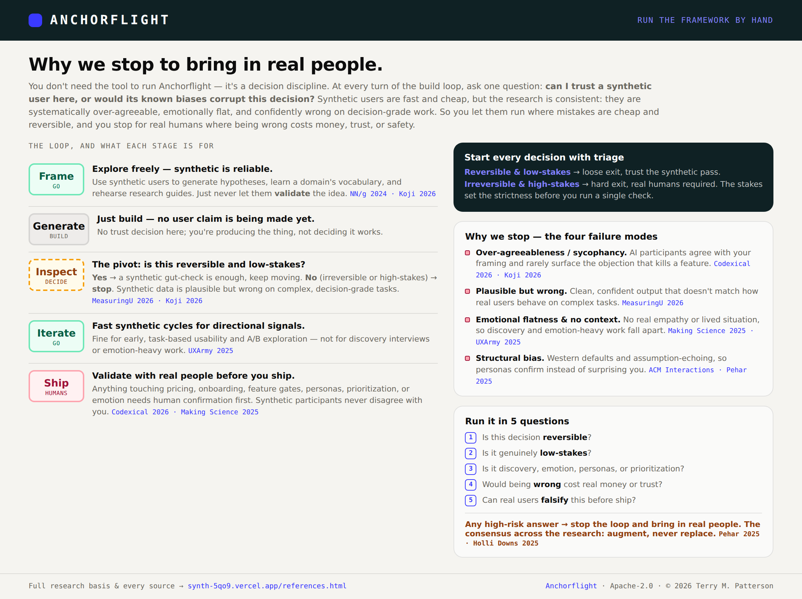

You build continuously with AI: intent to working screen in one loop, with no natural pause to validate. Anchorflight rides that loop and calls, at each turn, when synthetic users are reliable enough to trust and when a decision needs real humans before you ship.
Built for product teams (PMs, designers, and researchers) making decisions about pricing, onboarding, and feature gates.
Honest, open-source, and free to use, fork, and adapt
AI-simulated user feedback can accelerate research. But when applied to the wrong decisions, they create feedback loops that distort product metrics, inflate conversion assumptions, and mislead entire roadmap cycles.
Most teams don't know where the line is or don't know where to start, they either over-trust synthetic data or dismiss it entirely.
Anchorflight rides your build loop: a fast triage checkpoint decides when a synthetic gut-check is enough, and when to put the work in front of real people. Working in defined stages instead? The same logic runs as a sequential 8-gate framework.
Either way, you get a clear verdict: proceed, adjust, or use real customers only.
Both paths share the same goal: knowing when to trust synthetic users. Pick the one that matches how you work.
Building continuously with AI
Sounds like you if you go from idea to working screen in hours, design and build blur together, and you ship faster than you can validate.
→ Use the continuous-AI loopBuilding in defined stages
Sounds like you if you work in phases (discovery, design, build, QA) with handoffs between roles or teams and reviews between stages.
→ See the 8-gate frameworkNo installation. No build step. Open index.html in any browser and you're running.
For teams that go from idea to working screen in hours, building continuously with AI, a triage framework helps them identify when they can perform a synthetic gut-check, and when it is best to put their work in front of real human users.
Visual 8-step pipeline. Click any gate to see its operational guide, trigger scenarios, and lifecycle rationale. Each gate maps to a standard product phase in the lifecycle, and an Agentic AI phase.
Step-by-step wizard with a yes/no choice at each gate. Navigate forward and back, watch the visual step tracker update, and receive a detailed pass / warn / fail verdict with a downloadable report.
Configure a persona with real baseline data, company size, and industry. OpenRouter generates a bias-resistant system prompt. Then interview the simulated user live and audit for calibration drift and sycophancy.
A strategic positioning matrix: toggle between Standard Product Lifecycle and AI/Agentic Lifecycle to see where synthetic users genuinely help and where you must rely on real human feedback.
When a team needs preliminary and directional feedback on a user interface, a synthetic persona can quickly evaluate usability based on core dimensions like navigation clarity, task completion likelihood, cognitive load, terminology and labels, etc.
Gates marked red are decision branches: fail one and you're routed to a safer path. Amber gates are calibration checks.
Two short, shareable one-pagers. Print them, drop them in a deck, or pin them in your team channel.

A quick intro to Anchorflight and the loop at a glance: every stage colored by who you can trust there.

No tool required: why each stop exists and where the loop calls for real people, cited to the research behind Anchorflight.
The full source is a single HTML file: no build toolchain, no dependencies to install. Fork it, adapt it, translate it, or embed it in your own platform. The project is open source under the Apache License, Version 2.0: retain the copyright notice and you're free to use it commercially or in your own products.
Three ways to run the tool: pick the one that fits your context.
Live App
Click Launch the App above. AI is pre-wired via OpenRouter: no key required to start. Add your own key in the banner for higher rate limits.
RecommendedLocal File
git clone github.com/
vivistar/synth
open index.html
Add your own OpenRouter key in the banner for unlimited use.
Static Host
Drop the HTML files onto GitHub Pages, Netlify, Vercel, or Cloudflare Pages. Users supply their own API key via the in-app field.
Self-hostedNo signup. No installation. Just open the app and walk your decision through the 8 gates.
{kind=link}
{kind=link}